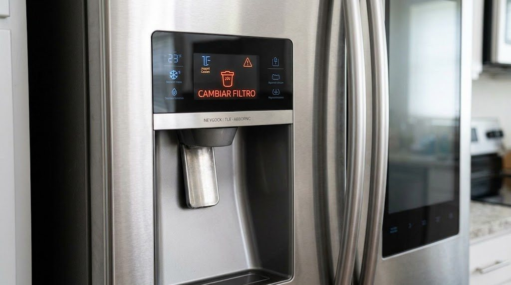

Cambio de filtro de agua de nevera Samsung en Panamá
Cuando la nevera muestra «cambiar filtro» o el agua sale lenta o con mal sabor, es momento de reemplazar el filtro. Lo hacemos a domicilio.

Cada cuánto cambiar el filtro
Por lo general cada 6 meses, o antes si el agua sale lenta, con sabor u olor extraño, o si la nevera muestra el aviso de filtro. En zonas con agua con más sedimentos puede necesitar cambio más seguido.
Señales de que el filtro está vencido
Luz o aviso de cambio de filtro, flujo de agua lento en el dispensador, hielo con mal sabor, o fábrica de hielo que produce poco.
Qué hacemos en la visita
Identificamos el modelo, instalamos el filtro correcto, purgamos el sistema y reiniciamos el aviso. Si el problema de agua continúa, revisamos manguera y válvula de entrada.
Equipos Samsung que atendemos
Neveras y Refrigeradoras
Reparamos neveras y refrigeradoras Samsung a domicilio en Ciudad de Panamá: de dos puertas (Side by Side), French Door,…
Ver servicio →Lavadoras
Reparamos lavadoras Samsung de carga superior y de carga frontal a domicilio en Ciudad de Panamá: no centrifugan, no…
Ver servicio →Secadoras
Reparamos secadoras Samsung eléctricas y de gas a domicilio en Ciudad de Panamá: no secan, no calientan, hacen ruido,…
Ver servicio →Aires Acondicionados
Instalamos, damos mantenimiento y reparamos aires acondicionados Samsung tipo split e inverter en Ciudad de Panamá: no…
Ver servicio →Preguntas frecuentes
¿Cómo reinicio el aviso de filtro?
En la mayoría de neveras con dispensador se mantiene presionado un botón del panel durante unos segundos después de cambiar el filtro; el método exacto depende del modelo.
¿Puedo cambiar el filtro yo mismo?
En muchos modelos es sencillo, pero si tienes dudas, el agua sale lenta o hay fugas, podemos hacerlo nosotros.
Búsquedas relacionadas
¿Necesitas servicio técnico Samsung en Panamá?
Escríbenos por WhatsApp con el equipo, el modelo y la falla. Te confirmamos disponibilidad para tu zona en minutos.